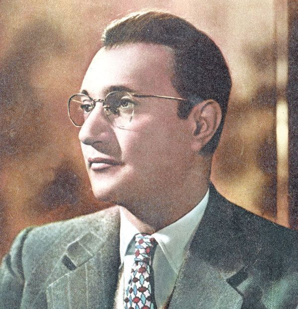

محمد عبد الوهاب — موسيقار الأجياليُعد محمد عبد الوهاب من أبرز الشخصيات في تاريخ الموسيقى العربية، فقد جمع بين موهبته في الغناء والتلحين وقدرته على التجديد والتطوير. استطاع أن يترك أثرًا واضحًا في الموسيقى العربية، وأن يقدم ألحانًا وأعمالًا فنية بقيت حاضرة في ذاكرة الأجيال، كما ساهم في تطوير شكل الأغنية العربية وإدخال أساليب موسيقية جديدة. وبفضل هذا الإرث الفني الكبير، بقي اسم محمد عبد الوهاب مرتبطًا بتاريخ الموسيقى العربية، وأصبح واحدًا من أهم رموزها.  رحلة فنية تركت أثرًا لا يُنسى في الموسيقى العربية. |